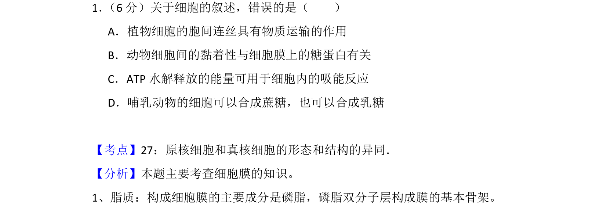
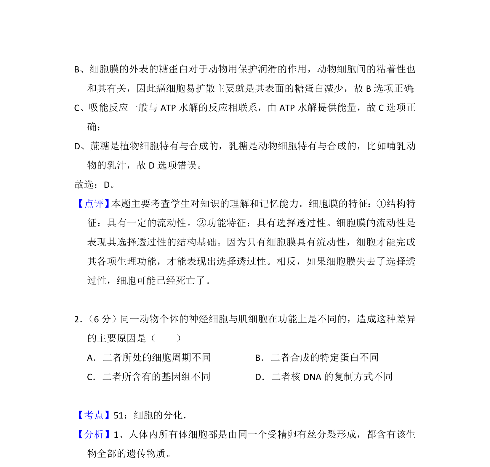

考点：细胞膜 糖蛋白 ATP 吸能反应

本题主要考查细胞结构与功能，包括胞间连丝运输、细胞黏着、ATP供能与动物细胞糖类合成等知识。

📄 原 PDF 第 1 页：
素材/真题/吉林/2008-2024·（吉林）生物高考真题/2014年高考生物试卷（新课标Ⅱ）（解析卷）.pdf
1． （6分）关于细胞的叙述，错误的是（ ） A．植物细胞的胞间连丝具有物质运输的作用 B．动物细胞间的黏着性与细胞膜上的糖蛋白有关 C．ATP水解释放的能量可用于细胞内的吸能反应 D．哺乳动物的细胞可以合成蔗糖，也可以合成乳糖
【考点】27：原核细胞和真核细胞的形态和结构的异同．菁优网版权所有 【分析】本题主要考查细胞膜的知识。 1、脂质：构成细胞膜的主要成分是磷脂，磷脂双分子层构成膜的基本骨架。